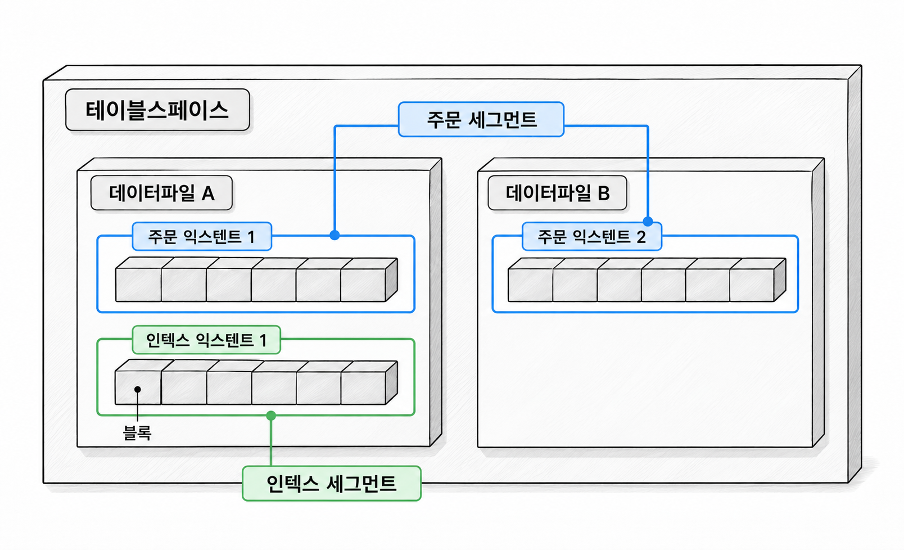
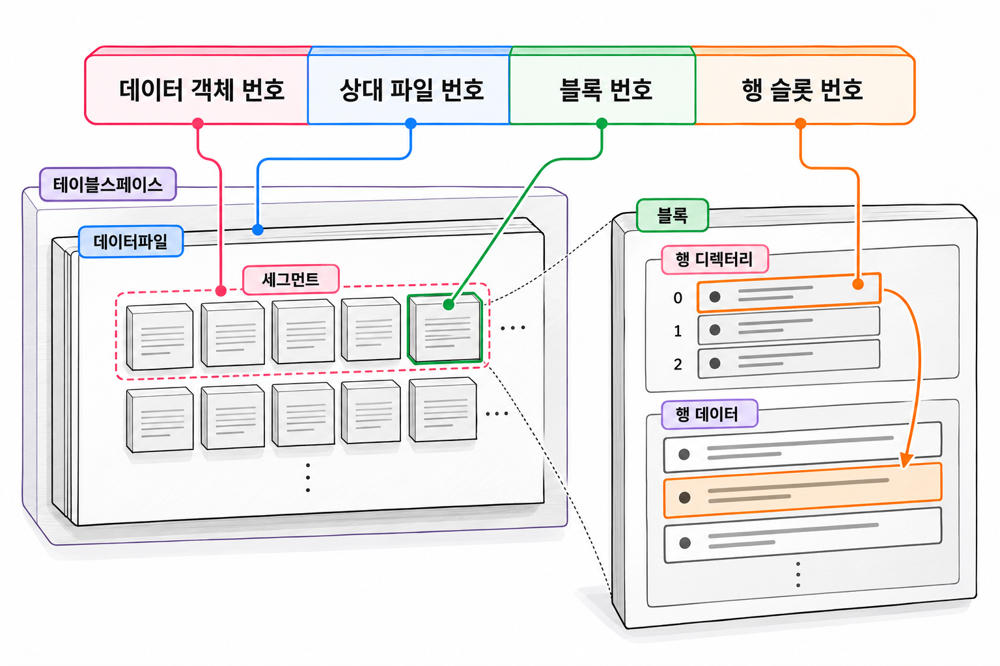
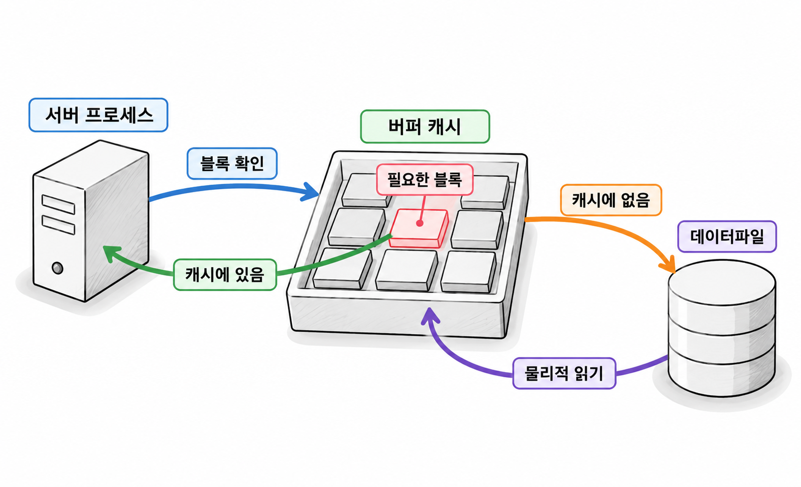

8장. Oracle 저장구조와 블록 접근이란?
1. 논리적·물리적 저장구조
1.1 테이블스페이스와 데이터파일
테이블스페이스는 테이블과 인덱스의 저장공간을 관리하는 논리적 단위입니다. 데이터파일은 그 내용을 실제로 저장하는 파일입니다. SQL로 테이블을 조회하면 저장장치에서는 데이터파일의 특정 위치에 접근합니다.
하나의 테이블스페이스는 하나 이상의 데이터파일을 사용합니다. 각 데이터파일은 하나의 테이블스페이스에 속합니다. 테이블마다 데이터파일을 하나씩 만드는 구조는 아닙니다. 같은 데이터파일에 여러 테이블과 인덱스의 데이터가 들어갈 수 있습니다.
이 장에서는 실습 PDB 안의 일반 영구 테이블스페이스를 기준으로 설명합니다. 임시 테이블스페이스는 정렬 등의 임시 작업을 위해 임시파일을 사용합니다.
1.2 세그먼트·익스텐트·블록
테이블스페이스 안의 공간은 세그먼트, 익스텐트, 블록으로 나누어 관리합니다.
| 단위 | 의미 |
|---|---|
| 세그먼트(segment) | 특정 저장구조를 위해 할당한 익스텐트의 집합 |
| 익스텐트(extent) | 한 데이터파일 안에서 연속한 Oracle 블록의 집합 |
| 블록(block) | Oracle이 데이터를 저장하고 입출력하는 기본 단위 |
일반 테이블에 저장공간을 할당하면 테이블 세그먼트가 만들어집니다. 데이터를 넣다가 기존 공간이 부족해지면 세그먼트에 익스텐트를 추가로 할당합니다. 익스텐트 크기와 추가 할당 방식은 테이블스페이스 설정 등에 따라 달라집니다.
세그먼트 하나는 한 테이블스페이스에 속합니다. 세그먼트에 속한 익스텐트들은 여러 데이터파일에 나뉠 수 있습니다. 다만 익스텐트 하나가 데이터파일 경계를 넘지는 않습니다.

그림 8-1에서 주문 세그먼트는 두 파일에 나뉘어 있습니다. 논리적으로는 하나의 저장공간이지만 물리적으로는 여러 파일을 사용합니다.
Oracle 블록 크기와 운영체제 블록 크기는 구별해야 합니다. 예를 들어 Oracle 블록이 8KB라면, 한 행의 일부 컬럼만 조회해도 기본적으로 그 행을 담은 Oracle 블록에 접근합니다. 행의 크기만큼만 파일에서 읽는 방식은 아닙니다.
1.3 테이블·인덱스·파티션의 저장공간
별도 저장 방식을 지정하지 않고 만든 일반 테이블은 힙 테이블(heap-organized table)입니다. 행을 키 순서대로 유지하지 않고, 저장 가능한 공간에 배치합니다. 따라서 저장 위치가 조회 결과의 순서를 보장하지는 않습니다. 순서가 필요하면 ORDER BY를 사용합니다.
테이블과 그 테이블의 인덱스는 별도 세그먼트에 저장됩니다. 인덱스를 만들면 인덱스용 저장공간이 따로 필요합니다.
| 객체 또는 저장구조 | 일반적인 세그먼트 구성 |
|---|---|
| 비파티션 힙 테이블 | 테이블 세그먼트 |
| 비파티션 인덱스 | 인덱스 세그먼트 |
| 파티션 테이블 | 데이터를 저장하는 파티션 또는 서브파티션별 세그먼트 |
| 테이블 밖에 저장하는 LOB 데이터 | 별도 LOB 세그먼트 등 |
| 일반 뷰 | 조회 정의만 저장하며 별도 데이터 세그먼트는 없음 |
파티션(partition)은 하나의 테이블을 일정한 기준에 따라 나눈 부분입니다. 파티션 테이블에서는 테이블 전체가 항상 하나의 세그먼트에 들어간다고 생각하면 안 됩니다. 구체적인 분할 방식은 19장에서 다룹니다.
테이블 정의가 존재해도 세그먼트가 아직 없을 수 있습니다. 지연 세그먼트 생성(deferred segment creation)을 사용하면 첫 데이터 입력 시점까지 공간 할당을 미룹니다. 객체 목록과 세그먼트 목록이 반드시 일치하지 않는 이유입니다.
2. 행과 블록
2.1 블록 내부와 행 저장
블록에는 행 데이터 외에도 행을 찾고 변경을 관리하는 정보가 들어갑니다. 블록 크기 전체를 컬럼 값으로 채울 수는 없습니다.
| 블록 내부 영역 | 역할 |
|---|---|
| 블록 헤더 | 블록의 종류와 변경 관리 정보 보관 |
| 테이블 디렉터리 | 블록에 저장된 테이블 정보 보관 |
| 행 디렉터리 | 행 조각의 위치를 찾는 슬롯 관리 |
| 여유 공간 | 새 행 입력이나 기존 행의 크기 증가에 사용 |
| 행 데이터 | 컬럼 값과 행을 관리하는 정보 저장 |
행 슬롯(row slot)은 행 디렉터리의 항목입니다. 슬롯으로 블록 안의 행 위치를 찾습니다. 블록 안에서 행 데이터의 위치가 바뀌어도 슬롯으로 연결을 유지할 수 있습니다.
일반적으로 한 블록에 여러 행이 들어갑니다. 반대로 행이 크면 한 행이 여러 행 조각으로 나뉠 수 있습니다. 따라서 행 수와 블록 수는 같은 값이 아닙니다.
행의 크기는 저장하는 값에 따라서도 달라집니다. VARCHAR2(1000 BYTE) 컬럼을 선언했다고 모든 행이 1,000바이트를 미리 차지하는 것은 아닙니다. 짧은 값을 긴 값으로 바꾸면 행이 차지하는 공간이 늘어날 수 있습니다.
PCTFREE는 기존 행의 크기 증가에 대비해 블록에 여유 공간을 남기는 설정입니다. 예를 들어 PCTFREE 20은 새 행을 넣을 때 블록 공간의 약 20%를 갱신용으로 남기는 기준입니다. 이후 기존 행이 커지면 남겨 둔 공간을 사용할 수 있습니다.
여유 공간을 많이 남기면 갱신에 유리할 수 있습니다. 대신 같은 데이터를 담는 데 더 많은 블록이 필요할 수 있으므로, 모든 테이블에 큰 값을 적용하지는 않습니다.
2.2 ROWID의 구성과 사용 범위
ROWID는 행의 저장 위치를 찾는 데 사용하는 주소입니다. 일반 힙 테이블에서는 SELECT 목록에 ROWID를 적어 조회할 수 있습니다. 직접 만든 컬럼이 아니어도 조회할 수 있는 의사 컬럼(pseudocolumn)입니다.
이 장에서 다루는 확장 ROWID에는 다음 정보가 들어갑니다.
| 구성요소 | 의미 |
|---|---|
| 데이터 객체 번호 | 데이터가 속한 세그먼트를 식별하는 번호 |
| 상대 파일 번호 | 테이블스페이스 안의 데이터파일 번호 |
| 블록 번호 | 파일 안의 블록 번호 |
| 행 슬롯 번호 | 블록 안의 행 슬롯 번호. 0부터 시작 |
ROWID에는 익스텐트 번호가 따로 들어가지 않습니다. 파일과 블록을 지정하면 접근할 위치를 찾을 수 있기 때문입니다.

ROWID는 행이 저장된 위치에 접근할 때 유용하지만 업무 식별자로 쓰면 안 됩니다. 행을 삭제한 뒤 같은 위치가 다른 행에 재사용될 수 있습니다. 테이블 이동 등으로 행의 ROWID가 바뀔 수도 있습니다. 회원번호나 주문번호를 대신하는 기본키로 사용하지 않습니다.
인덱스 구성 테이블처럼 저장 방식이 다른 객체는 논리 ROWID를 사용할 수 있습니다. 이후 실습에서는 일반 힙 테이블의 물리적 위치를 확인합니다.
2.3 행 이주·행 연결과 추가 접근 비용
행 하나가 항상 한 블록 안에 저장되는 것은 아닙니다. 대표적인 경우가 행 이주와 행 연결입니다.
행 이주(row migration)는 갱신으로 커진 행이 원래 블록에 들어가지 못해 다른 블록으로 옮겨지는 현상입니다. 여기서는 새 블록에 행 전체가 들어갈 수 있다고 가정합니다. 원래 자리에는 이동한 위치를 가리키는 정보가 남습니다.
행 이주가 발생해도 원래 ROWID는 유지됩니다. 인덱스에서 얻은 ROWID로 원래 블록에 접근하면, 그곳의 연결 정보를 따라 새 블록으로 이동합니다. 이 과정에서 추가 블록 접근이 생길 수 있습니다.
행 연결(row chaining)은 행을 여러 조각으로 나누어 연결하는 방식입니다. 처음부터 한 블록에 들어가지 못할 만큼 큰 행이 대표적인 원인입니다. 행 전체를 읽으려면 여러 블록에 접근해야 할 수 있습니다.
| 구분 | 대표적인 발생 원인 | 저장 모습 |
|---|---|---|
| 행 이주 | 갱신 후 원래 블록의 공간 부족 | 다른 블록으로 행을 옮기고 원래 위치에 연결 정보 유지 |
| 행 연결 | 한 블록에 담기 어려운 큰 행 | 여러 행 조각을 연결하여 저장 |
행 이주는 갱신 후 예상되는 행 크기에 맞춰 여유 공간을 남기면 줄일 수 있습니다. 이미 발생한 이주를 설정 변경만으로 되돌릴 수는 없습니다. 행 자체가 블록보다 큰 경우에는 여유 공간을 늘리는 것만으로 행 연결을 없애기 어렵습니다.
추가로 접근할 블록이 캐시에 있으면 파일을 더 읽지 않을 수도 있습니다. 그래도 블록을 찾고 확인하는 작업은 늘어납니다. 추가 접근 비용을 모두 저장장치 읽기 횟수로 해석해서는 안 됩니다.
3. 블록을 읽는 과정
3.1 버퍼 캐시와 논리적·물리적 읽기
논리적 읽기(logical read)는 SQL 실행 중 메모리에 있는 블록에 접근하는 작업입니다. 물리적 읽기(physical read)는 데이터파일에서 블록을 읽어 오는 작업입니다.
일반적인 버퍼 캐시 경로에서는 필요한 블록이 캐시에 있는지 확인합니다. 있으면 캐시에 있는 블록을 사용합니다. 없으면 데이터파일에서 읽어 캐시에 적재한 뒤 사용합니다.

예를 들어 같은 블록에 100번 접근했다면 논리적 읽기는 반복될 수 있습니다. 그동안 블록이 캐시에 남아 있었다면 물리적 읽기는 처음에만 필요할 수 있습니다. 따라서 물리적 읽기가 적다는 이유만으로 SQL이 적은 일을 했다고 판단할 수는 없습니다.
반복 실행이 빨라지는 현상도 논리적 읽기와 물리적 읽기의 차이와 관련이 있습니다. 첫 실행에서 읽은 블록을 다음 실행에서 재사용할 수 있기 때문입니다.
모든 읽기가 그림 8-3의 경로를 따르지는 않습니다. 일부 대량 스캔은 버퍼 캐시를 거치지 않는 직접 경로 읽기(direct path read)를 사용할 수 있습니다. Oracle의 물리적 읽기라고 해서 반드시 저장장치 매체까지 접근했다는 뜻도 아닙니다. 운영체제나 스토리지 캐시가 요청에 응답할 수도 있습니다.
3.2 단일 블록·다중 블록 읽기
단일 블록 읽기(single-block read)는 한 번의 읽기 요청으로 블록 하나를 가져오는 방식입니다. 인덱스로 특정 행의 위치를 찾아 접근할 때 자주 나타납니다.
다중 블록 읽기(multiblock read)는 한 번의 요청으로 여러 블록을 가져오는 방식입니다. 넓은 범위의 데이터를 순차적으로 읽을 때 요청 횟수를 줄이는 데 유리합니다.
| 구분 | 일반적인 사용 상황 | 유의할 점 |
|---|---|---|
| 단일 블록 읽기 | 특정 인덱스 블록이나 테이블 블록 접근 | 적은 행을 찾아도 여러 요청이 생길 수 있음 |
| 다중 블록 읽기 | 전체 테이블 스캔 등의 대량 읽기 | 한 번에 읽는 블록 수는 환경과 실행 조건에 따라 달라짐 |
다중 블록 읽기는 여러 행을 읽는다는 뜻이 아닙니다. 읽기 단위는 블록이며, 각 블록에서 조건에 맞는 행을 확인합니다. 한 블록을 읽어도 반환 행은 0건일 수 있습니다.
인덱스 접근에서도 블록을 미리 읽거나 여러 ROWID를 묶어 처리할 수 있습니다. 따라서 인덱스는 언제나 한 블록씩만 읽는다고 단정하지 않습니다. 여기서는 특정 위치를 반복 방문하는 접근과 넓은 영역을 훑는 접근의 차이를 먼저 이해합니다.
3.3 전체 테이블 스캔과 인덱스 접근의 비교
전체 테이블 스캔(full table scan)은 테이블의 스캔 대상 블록을 읽으며 조건에 맞는 행을 찾는 방식입니다. 테이블 세그먼트에는 사용 이력을 나타내는 고수위 표시(high water mark, HWM)가 있습니다. 일반적인 전체 스캔은 이 경계까지의 블록을 대상으로 합니다. 공간 관리 방식에 따라 일부 미사용 블록을 건너뛸 수 있습니다.
행을 많이 삭제했더라도 HWM이 그대로라면 스캔 범위가 크게 줄지 않을 수 있습니다. 반환 행 수와 읽는 블록 수를 구별해야 하는 이유입니다.
일반적인 B-tree 인덱스 접근에서는 조건에 맞는 인덱스 항목을 찾습니다. 이어서 항목에 담긴 ROWID로 테이블 블록을 방문합니다. 필요한 값이 인덱스에 모두 있고 조회 의미도 충족하면 테이블 방문을 생략할 수도 있습니다.
| 비교 기준 | 전체 테이블 스캔 | 인덱스 후 테이블 접근 |
|---|---|---|
| 찾는 방법 | 블록을 읽으며 조건 검사 | 인덱스에서 후보를 찾고 ROWID로 방문 |
| 유리할 수 있는 상황 | 많은 행을 조회하거나 테이블이 작음 | 적은 후보를 좁혀 조회함 |
| 주요 비용 | 넓은 블록 범위 읽기 | 인덱스 읽기와 반복적인 테이블 방문 |
| 결과 순서 | 보장하지 않음 | ORDER BY 없이는 보장하지 않음 |
주문 100만 건 중 주문번호 하나를 찾는 경우에는 인덱스로 후보를 좁히는 접근이 유리할 수 있습니다. 반면 전체 주문의 상당 부분을 읽어야 한다면, 인덱스를 거쳐 여러 테이블 블록을 방문하는 비용이 커질 수 있습니다.
반환 비율만으로 어느 방식이 빠른지 결정할 수는 없습니다. 테이블 크기, 행의 배치, 캐시 상태, 필요한 컬럼도 영향을 줍니다. 인덱스가 있어도 전체 테이블 스캔을 선택할 수 있습니다. Oracle Database 21c SQL Tuning Guide
이 장에서는 접근 방식의 차이까지 이해합니다. 실제 실행 계획과 읽기량을 확인하는 방법은 11장에서 다룹니다.
4. 연습문제 — ROWID와 세그먼트 정보 확인
실습 전용 테이블을 만들고 ROWID를 분해합니다. 이어서 ROWID의 파일·블록 번호가 어느 익스텐트에 포함되는지 확인합니다.
다음 코드는 실습 PDB의 개인 계정에서 실행합니다. 테이블 생성 권한과 기본 테이블스페이스의 할당량이 필요합니다. DBMS_ROWID 실행이 제한된 환경이라면 관리자에게 해당 패키지의 실행 권한을 확인합니다.
CH08_STORAGE_PROBE라는 이름의 객체가 없는 상태에서 시작합니다. 기존 장의 실습 테이블은 사용하지 않습니다.
예제 8-1 — 행 주소와 할당된 저장공간 확인하기
파일명: ch08-storage-probe.sql
CREATE TABLE ch08_storage_probe (
probe_id NUMBER
CONSTRAINT pk_ch08_storage_probe PRIMARY KEY,
memo VARCHAR2(100 BYTE)
);
INSERT INTO ch08_storage_probe (probe_id, memo)
SELECT LEVEL,
'probe-' || TO_CHAR(LEVEL, 'FM0000')
FROM dual
CONNECT BY LEVEL <= 1000;
COMMIT;
SELECT COUNT(*) AS row_count
FROM ch08_storage_probe;
SELECT probe_id,
ROWIDTOCHAR(ROWID) AS row_address,
DBMS_ROWID.ROWID_OBJECT(ROWID) AS data_object_no,
DBMS_ROWID.ROWID_RELATIVE_FNO(ROWID) AS relative_file_no,
DBMS_ROWID.ROWID_BLOCK_NUMBER(ROWID) AS block_no,
DBMS_ROWID.ROWID_ROW_NUMBER(ROWID) AS slot_no
FROM ch08_storage_probe
WHERE probe_id <= 5
ORDER BY probe_id;
SELECT object_name,
object_type,
object_id,
data_object_id
FROM user_objects
WHERE object_name IN (
'CH08_STORAGE_PROBE',
'PK_CH08_STORAGE_PROBE'
)
ORDER BY object_type, object_name;
SELECT segment_name,
segment_type,
tablespace_name,
bytes,
blocks,
extents
FROM user_segments
WHERE segment_name IN (
'CH08_STORAGE_PROBE',
'PK_CH08_STORAGE_PROBE'
)
ORDER BY segment_type, segment_name;
SELECT segment_name,
extent_id,
file_id,
relative_fno,
block_id,
blocks
FROM user_extents
WHERE segment_name = 'CH08_STORAGE_PROBE'
ORDER BY extent_id;
SELECT p.probe_id,
DBMS_ROWID.ROWID_RELATIVE_FNO(p.ROWID)
AS relative_file_no,
DBMS_ROWID.ROWID_BLOCK_NUMBER(p.ROWID)
AS row_block_no,
e.extent_id,
e.block_id AS extent_start_block,
e.block_id + e.blocks - 1 AS extent_end_block
FROM ch08_storage_probe p
JOIN user_extents e
ON e.segment_name = 'CH08_STORAGE_PROBE'
AND e.segment_type = 'TABLE'
AND e.relative_fno =
DBMS_ROWID.ROWID_RELATIVE_FNO(p.ROWID)
AND DBMS_ROWID.ROWID_BLOCK_NUMBER(p.ROWID)
BETWEEN e.block_id AND e.block_id + e.blocks - 1
WHERE p.probe_id <= 5
ORDER BY p.probe_id;실행 결과
첫 번째 조회에서는 다음 건수가 나옵니다.
ROW_COUNT
---------
1000나머지 조회에서 나오는 주소와 공간 크기는 환경마다 달라집니다. 실행 결과에서는 다음 관계를 확인합니다.
| 확인 대상 | 기대하는 관계 |
|---|---|
| ROWID 조회 | PROBE_ID 1부터 5까지의 주소 정보가 나옴 |
| 데이터 객체 번호 | 테이블의 DATA_OBJECT_ID와 ROWID에서 추출한 번호가 일치함 |
| 세그먼트 조회 | 테이블과 기본키용 인덱스가 별도 행으로 나타남 |
| 익스텐트 조회 | 각 익스텐트의 시작 블록과 블록 수가 나타남 |
| 마지막 조회 | 행의 블록 번호가 해당 익스텐트의 시작·끝 범위 안에 있음 |
이 예제에서 기본키를 만들 때 Oracle이 생성한 인덱스의 이름은 PK_CH08_STORAGE_PROBE입니다. 테이블과 인덱스의 저장공간을 각각 확인할 수 있습니다.
USER_SEGMENTS.BLOCKS는 세그먼트에 할당된 블록 수입니다. 행 데이터로 채운 블록 수와 같다고 해석하지 않습니다. 익스텐트 단위로 공간을 확보하므로 아직 사용하지 않은 공간도 포함됩니다.
USER_EXTENTS.FILE_ID와 ROWID에서 추출한 상대 파일 번호도 구별합니다. 이 예제에서는 RELATIVE_FNO를 이용해 상대 파일 번호끼리 비교합니다.
같은 블록에 있는 두 행은 데이터 객체 번호, 상대 파일 번호, 블록 번호가 같습니다. 두 행은 행 슬롯 번호로 구별합니다. 다만 앞의 다섯 행이 반드시 같은 블록에 들어간다고 가정하지는 않습니다.
요구사항
- 예제 8-1을 SQL Developer에서 실행합니다.
- 다섯 행의 ROWID 구성요소를 표로 기록합니다.
- 테이블과 인덱스의 세그먼트 종류, 블록 수, 익스텐트 수를 기록합니다.
- 한 행을 골라 해당 블록이 속한 익스텐트의 범위를 확인합니다.
- 반환 행 수만으로 읽기량을 알 수 없는 이유를 두 문장으로 설명합니다.
완료 조건
- 데이터 객체 번호와
DATA_OBJECT_ID의 관계를 설명합니다. - 행의 블록 번호가 익스텐트 범위 안에 있음을 확인합니다.
- 행 수, 할당 블록 수, 익스텐트 수를 구별합니다.
- ROWID를 업무용 기본키로 사용하지 않는 이유를 설명합니다.
- 같은 결과를 반환해도 전체 스캔과 인덱스 접근의 블록 방문 방식이 다름을 설명합니다.
결과를 기록한 뒤 실습 객체가 더 필요하지 않으면 제거합니다. 다음 코드는 예제 8-1에서 만든 전용 테이블만 제거합니다.
코드 조각
DROP TABLE ch08_storage_probe PURGE;테이블을 제거하면 이 테이블의 기본키용 인덱스도 함께 제거됩니다.